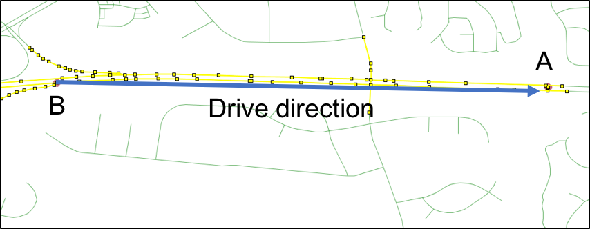
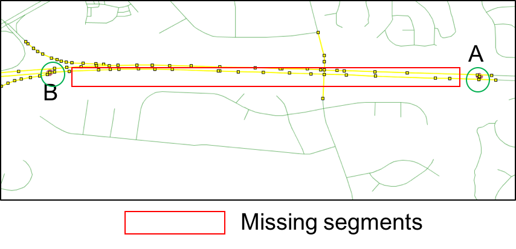

Iframe
This is the header
- At W3Schools you will find all the Web-building tutorials you need, from basic HTML and XHTML to advanced XML, XSL, Multimedia and WAP.
- At W3Schools you will find all the Web-building tutorials you need, from basic HTML and XHTML to advanced XML, XSL, Multimedia and WAP.
- W3Schools - The Largest Web Developers Site On The Net!
- W3Schools - The Largest Web Developers Site On The Net!
Two Unequal Columns
- this is reveal js size. Please take a note of how big it is.
- this is medium
- this is medium
- this is medium
- this is medium

figure exp. This is a test image
figure exp. This is a test image
Movies 2014
-
w3-content
The w3-content class defines a container for fixed size centered content. Use the CSS max-width property to override the default width (980px).
-
The Fault in Our Stars
Touching, gripping and genuinely well made.
-
The Avengers
A huge success for Marvel and Disney.
|
Uncertainty in GPS positioning, simply using nearest segment to snap the waypoint is problematic |
|

|
|
|
Large and irregular time intervals between two waypoints (1~2mins) may cause gaps between road segments in the same trip. |
|
|  |
VMT estimation results of local roads in Maryland

Ongoing research...